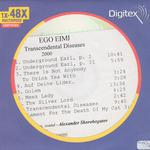

| Artist: | Ego Eimi |
| Title: | Transcendental Diseases |
| Label: | Independent |
| Length(s): | 57 minutes |
| Year(s) of release: | 2000 |
| Month of review: | [12/2004] |
| 1) | Underground Earl, Part I | 10.41 |
| 2) | Underground Earl, Part II | 5.59 |
| 3) | There Is Not Anybody To Drink Tea With | 3.24 |
| 4) | Auf Deine Lider... | 3.28 |
| 5) | Golem | 13.36 |
| 6) | Meek Lady | 4.29 |
| 7) | The Silver Lord | 2.42 |
| 8) | Transcendental Diseases | 9.40 |
| 9) | Lament For The Death Of My Cat | 3.28 |
Not withstanding the English titles, the lyrics are in Russian, as is all info at www.realmusic.ru/egoeimi
Some of the tracks are pretty long, and heavy instrumental sections heavy on synth or guitar, giving them a progressive feeling. The vocal sections have certain singer songwriter tendencies as well, somewhere between Ian Anderson and John Martyn. Especially The Silver Lord brings thoughts of the former to me in the vocal inflections. Those vocal inflections are pretty much of importance, considering the fact that most westerners won't even be able to hear words in the lyrics. There Is Nobody develops an irritating push, whilst Auf Deine Lider has great progressive start and intermezzo, with the vocal sections not living up to the promise made this way. And with this the Russian vocals start wearing one down. The different sounds, but maybe just as much the fact that the vocals simply have to carry too much weight in these rather sparse tracks.
However, there are some exceptions to the rule. Lament For The Death Of My Cat for instance doesn't sound half as tormented as the title does. Quite to the contrary, it is a friendly instrumental folk track featuring traditional percussion and snare instruments.
skorobogat@mail.ru